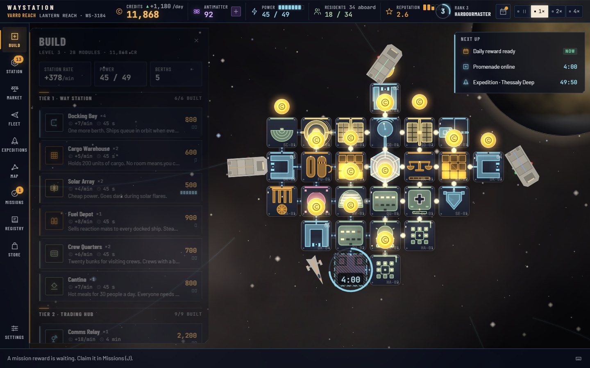

Dock the traffic Ops
Freighters pull up to your bays for fuel, repairs and a hot meal, and pay on departure. One bay, one ship at a time; every bay needs an open side for the approach.
Station commissioning · open to all captains
Command a way station on the edge of interstellar space. Dock freighters, trade their cargo, tap your banks, send expeditions out to chart new sectors, and grow one docking collar into a galactic gate. Then do it again around the next star.

Freighters pull up to your bays for fuel, repairs and a hot meal, and pay on departure. One bay, one ship at a time; every bay needs an open side for the approach.
Ships sell what their home world exports and buy what it imports. Set Buy and Sell per good, hold ore for a refinery, and ride the booms.
Every module earns credits by the minute into its own bank. A glowing coin means it is ready: tap it and watch the credits fly home. Banks keep filling while you are away.
Modules take real time to come online, from 45 seconds to an hour by tier. Queue a build, go live your life, come back to a brighter station. Antimatter skips the wait.
Send surveys from your docks to any of eight sectors. They come back with cargo, charts, Antimatter and discoveries for the Registry: ship classes, species, artifacts.
Each sector is a whole new station around its own world: dust storms, an asteroid belt, an ocean, a volcanic verge, a ringed giant, the violet gate. One wallet across all of them.
Forty-eight goals in seven chapters, three live at a time. Finish one, come back and claim the credits, Antimatter and rank it pays.
A seven-day streak of credits, crates and Antimatter, with a livery token on day seven. Miss a day and you can mend the streak.
Ensign to Admiral of the Reach. Ranks are earned across every sector and grant real powers: collect all banks at once, a fourth mission, a bonus on every rate.
Twenty-four ship classes, twelve alien species and sixteen artifacts to find, with lore for each. Completing a set pays Antimatter and a title.
One docking collar and 6,000 credits. Build a bay, a warehouse and a solar array, then serve your first ships.
A comms relay, a trade exchange, habitats and a reactor. Companies begin to trust you, and the second sector opens.
An academy, a bank, a promenade and a shipyard. Residents run businesses; you lend credits at interest.
A deep-space observatory and the jump gate beacon. Long-haul liners arrive.
The end of the line: a port the whole reach routes through.
Premium currency
Earned by missions, daily rewards and expeditions, and sold in the Store. Spend it to skip a build, call an expedition home, open a sector before you have the charts, or dress the station in a sector livery. The game is free to play; nothing in it needs Antimatter.
Purchases run in test mode during the preview: the store is live to browse and nothing is charged.
Your commander profile saves to your browser every few seconds and when you leave the tab. Timers run on the clock, so builds finish and banks fill while you are gone.
One profile per browser, every sector inside it. Export and import it from Settings. Nothing leaves your device: no account, no server.
Built for a desktop browser at 1280 px and wider with WebGL on. A landscape tablet works; a phone does not, yet.
Current Chrome, Edge, Firefox and Safari. Reduced-motion settings are honoured, and the effects tier steps down on slower machines.